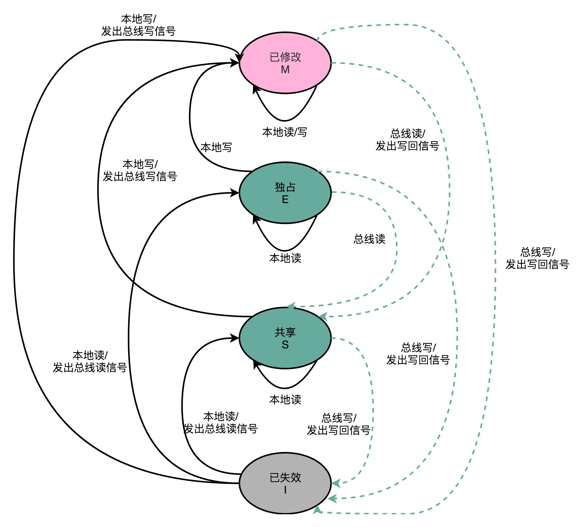

- 00 开篇词 为什么你需要学习计算机组成原理？.md.html
- 01 冯·诺依曼体系结构：计算机组成的金字塔.md.html
- 02 给你一张知识地图，计算机组成原理应该这么学.md.html
- 03 通过你的CPU主频，我们来谈谈“性能”究竟是什么？.md.html
- 04 穿越功耗墙，我们该从哪些方面提升“性能”？.md.html
- 05 计算机指令：让我们试试用纸带编程.md.html
- 06 指令跳转：原来if...else就是goto.md.html
- 07 函数调用：为什么会发生stack overflow？.md.html
- 08 ELF和静态链接：为什么程序无法同时在Linux和Windows下运行？.md.html
- 09 程序装载：“640K内存”真的不够用么？.md.html
- 10 动态链接：程序内部的“共享单车”.md.html
- 11 二进制编码：“手持两把锟斤拷，口中疾呼烫烫烫”？.md.html
- 12 理解电路：从电报机到门电路，我们如何做到“千里传信”？.md.html
- 13 加法器：如何像搭乐高一样搭电路（上）？.md.html
- 14 乘法器：如何像搭乐高一样搭电路（下）？.md.html
- 15 浮点数和定点数（上）：怎么用有限的Bit表示尽可能多的信息？.md.html
- 16 浮点数和定点数（下）：深入理解浮点数到底有什么用？.md.html
- 17 建立数据通路（上）：指令加运算=CPU.md.html
- 18 建立数据通路（中）：指令加运算=CPU.md.html
- 19 建立数据通路（下）：指令加运算=CPU.md.html
- 20 面向流水线的指令设计（上）：一心多用的现代CPU.md.html
- 21 面向流水线的指令设计（下）：奔腾4是怎么失败的？.md.html
- 22 冒险和预测（一）：hazard是“危”也是“机”.md.html
- 23 冒险和预测（二）：流水线里的接力赛.md.html
- 24 冒险和预测（三）：CPU里的“线程池”.md.html
- 25 冒险和预测（四）：今天下雨了，明天还会下雨么？.md.html
- 26 Superscalar和VLIW：如何让CPU的吞吐率超过1？.md.html
- 27 SIMD：如何加速矩阵乘法？.md.html
- 28 异常和中断：程序出错了怎么办？.md.html
- 29 CISC和RISC：为什么手机芯片都是ARM？.md.html
- 30 GPU（上）：为什么玩游戏需要使用GPU？.md.html
- 31 GPU（下）：为什么深度学习需要使用GPU？.md.html
- 32 FPGA、ASIC和TPU（上）：计算机体系结构的黄金时代.md.html
- 33 解读TPU：设计和拆解一块ASIC芯片.md.html
- 34 理解虚拟机：你在云上拿到的计算机是什么样的？.md.html
- 35 存储器层次结构全景：数据存储的大金字塔长什么样？.md.html
- 36 局部性原理：数据库性能跟不上，加个缓存就好了？.md.html
- 37 理解CPU Cache（上）：“4毫秒”究竟值多少钱？.md.html
- 38 高速缓存（下）：你确定你的数据更新了么？.md.html
- 39 MESI协议：如何让多核CPU的高速缓存保持一致？.md.html
- 40 理解内存（上）：虚拟内存和内存保护是什么？.md.html
- 41 理解内存（下）：解析TLB和内存保护.md.html
- 42 总线：计算机内部的高速公路.md.html
- 43 输入输出设备：我们并不是只能用灯泡显示“0”和“1”.md.html
- 44 理解IO_WAIT：IO性能到底是怎么回事儿？.md.html
- 45 机械硬盘：Google早期用过的“黑科技”.md.html
- 46 SSD硬盘（上）：如何完成性能优化的KPI？.md.html
- 47 SSD硬盘（下）：如何完成性能优化的KPI？.md.html
- 48 DMA：为什么Kafka这么快？.md.html
- 49 数据完整性（上）：硬件坏了怎么办？.md.html
- 50 数据完整性（下）：如何还原犯罪现场？.md.html
- 51 分布式计算：如果所有人的大脑都联网会怎样？.md.html
- 52 设计大型DMP系统（上）：MongoDB并不是什么灵丹妙药.md.html
- 53 设计大型DMP系统（下）：SSD拯救了所有的DBA.md.html
- 54 理解Disruptor（上）：带你体会CPU高速缓存的风驰电掣.md.html
- 55 理解Disruptor（下）：不需要换挡和踩刹车的CPU，有多快？.md.html
- 结束语 知也无涯，愿你也享受发现的乐趣.md.html
- 捐赠
39 MESI协议：如何让多核CPU的高速缓存保持一致？
你平时用的电脑，应该都是多核的 CPU。多核 CPU 有很多好处，其中最重要的一个就是，它使得我们在不能提升 CPU 的主频之后，找到了另一种提升 CPU 吞吐率的办法。
不知道上一讲的内容你还记得多少？上一节，我们讲到，多核 CPU 里的每一个 CPU 核，都有独立的属于自己的 L1 Cache 和 L2 Cache。多个 CPU 之间，只是共用 L3 Cache 和主内存。
我们说，CPU Cache 解决的是内存访问速度和 CPU 的速度差距太大的问题。而多核 CPU 提供的是，在主频难以提升的时候，通过增加 CPU 核心来提升 CPU 的吞吐率的办法。我们把多核和 CPU Cache 两者一结合，就给我们带来了一个新的挑战。因为 CPU 的每个核各有各的缓存，互相之间的操作又是各自独立的，就会带来缓存一致性（Cache Coherence）的问题。

缓存一致性问题
那什么是缓存一致性呢？我们拿一个有两个核心的 CPU，来看一下。你可以看这里这张图，我们结合图来说。

在这两个 CPU 核心里，1 号核心要写一个数据到内存里。这个怎么理解呢？我拿一个例子来给你解释。
比方说，iPhone 降价了，我们要把 iPhone 最新的价格更新到内存里。为了性能问题，它采用了上一讲我们说的写回策略，先把数据写入到 L2 Cache 里面，然后把 Cache Block 标记成脏的。这个时候，数据其实并没有被同步到 L3 Cache 或者主内存里。1 号核心希望在这个 Cache Block 要被交换出去的时候，数据才写入到主内存里。
如果我们的 CPU 只有 1 号核心这一个 CPU 核，那这其实是没有问题的。不过，我们旁边还有一个 2 号核心呢！这个时候，2 号核心尝试从内存里面去读取 iPhone 的价格，结果读到的是一个错误的价格。这是因为，iPhone 的价格刚刚被 1 号核心更新过。但是这个更新的信息，只出现在 1 号核心的 L2 Cache 里，而没有出现在 2 号核心的 L2 Cache 或者主内存里面。这个问题，就是所谓的缓存一致性问题，1 号核心和 2 号核心的缓存，在这个时候是不一致的。
为了解决这个缓存不一致的问题，我们就需要有一种机制，来同步两个不同核心里面的缓存数据。那这样的机制需要满足什么条件呢？我觉得能够做到下面两点就是合理的。
第一点叫写传播（Write Propagation）。写传播是说，在一个 CPU 核心里，我们的 Cache 数据更新，必须能够传播到其他的对应节点的 Cache Line 里。
第二点叫事务的串行化（Transaction Serialization），事务串行化是说，我们在一个 CPU 核心里面的读取和写入，在其他的节点看起来，顺序是一样的。
第一点写传播很容易理解。既然我们数据写完了，自然要同步到其他 CPU 核的 Cache 里。但是第二点事务的串行化，可能没那么好理解，我这里仔细解释一下。
我们还拿刚才修改 iPhone 的价格来解释。这一次，我们找一个有 4 个核心的 CPU。1 号核心呢，先把 iPhone 的价格改成了 5000 块。差不多在同一个时间，2 号核心把 iPhone 的价格改成了 6000 块。这里两个修改，都会传播到 3 号核心和 4 号核心。

然而这里有个问题，3 号核心先收到了 2 号核心的写传播，再收到 1 号核心的写传播。所以 3 号核心看到的 iPhone 价格是先变成了 6000 块，再变成了 5000 块。而 4 号核心呢，是反过来的，先看到变成了 5000 块，再变成 6000 块。虽然写传播是做到了，但是各个 Cache 里面的数据，是不一致的。
事实上，我们需要的是，从 1 号到 4 号核心，都能看到相同顺序的数据变化。比如说，都是先变成了 5000 块，再变成了 6000 块。这样，我们才能称之为实现了事务的串行化。
事务的串行化，不仅仅是缓存一致性中所必须的。比如，我们平时所用到的系统当中，最需要保障事务串行化的就是数据库。多个不同的连接去访问数据库的时候，我们必须保障事务的串行化，做不到事务的串行化的数据库，根本没法作为可靠的商业数据库来使用。
而在 CPU Cache 里做到事务串行化，需要做到两点，第一点是一个 CPU 核心对于数据的操作，需要同步通信给到其他 CPU 核心。第二点是，如果两个 CPU 核心里有同一个数据的 Cache，那么对于这个 Cache 数据的更新，需要有一个“锁”的概念。只有拿到了对应 Cache Block 的“锁”之后，才能进行对应的数据更新。接下来，我们就看看实现了这两个机制的 MESI 协议。
总线嗅探机制和 MESI 协议
要解决缓存一致性问题，首先要解决的是多个 CPU 核心之间的数据传播问题。最常见的一种解决方案呢，叫作总线嗅探（Bus Snooping）。这个名字听起来，你多半会很陌生，但是其实特很好理解。
这个策略，本质上就是把所有的读写请求都通过总线（Bus）广播给所有的 CPU 核心，然后让各个核心去“嗅探”这些请求，再根据本地的情况进行响应。
总线本身就是一个特别适合广播进行数据传输的机制，所以总线嗅探这个办法也是我们日常使用的 Intel CPU 进行缓存一致性处理的解决方案。关于总线这个知识点，我们会放在后面的 I/O 部分更深入地进行讲解，这里你只需要了解就可以了。
基于总线嗅探机制，其实还可以分成很多种不同的缓存一致性协议。不过其中最常用的，就是今天我们要讲的 MESI 协议。和很多现代的 CPU 技术一样，MESI 协议也是在 Pentium 时代，被引入到 Intel CPU 中的。
MESI 协议，是一种叫作写失效（Write Invalidate）的协议。在写失效协议里，只有一个 CPU 核心负责写入数据，其他的核心，只是同步读取到这个写入。在这个 CPU 核心写入 Cache 之后，它会去广播一个“失效”请求告诉所有其他的 CPU 核心。其他的 CPU 核心，只是去判断自己是否也有一个“失效”版本的 Cache Block，然后把这个也标记成失效的就好了。
相对于写失效协议，还有一种叫作写广播（Write Broadcast）的协议。在那个协议里，一个写入请求广播到所有的 CPU 核心，同时更新各个核心里的 Cache。
写广播在实现上自然很简单，但是写广播需要占用更多的总线带宽。写失效只需要告诉其他的 CPU 核心，哪一个内存地址的缓存失效了，但是写广播还需要把对应的数据传输给其他 CPU 核心。
MESI 协议的由来呢，来自于我们对 Cache Line 的四个不同的标记，分别是：
- M：代表已修改（Modified）
- E：代表独占（Exclusive）
- S：代表共享（Shared）
- I：代表已失效（Invalidated）
我们先来看看“已修改”和“已失效”，这两个状态比较容易理解。所谓的“已修改”，就是我们上一讲所说的“脏”的 Cache Block。Cache Block 里面的内容我们已经更新过了，但是还没有写回到主内存里面。而所谓的“已失效“，自然是这个 Cache Block 里面的数据已经失效了，我们不可以相信这个 Cache Block 里面的数据。
然后，我们再来看“独占”和“共享”这两个状态。这就是 MESI 协议的精华所在了。无论是独占状态还是共享状态，缓存里面的数据都是“干净”的。这个“干净”，自然对应的是前面所说的“脏”的，也就是说，这个时候，Cache Block 里面的数据和主内存里面的数据是一致的。
那么“独占”和“共享”这两个状态的差别在哪里呢？这个差别就在于，在独占状态下，对应的 Cache Line 只加载到了当前 CPU 核所拥有的 Cache 里。其他的 CPU 核，并没有加载对应的数据到自己的 Cache 里。这个时候，如果要向独占的 Cache Block 写入数据，我们可以自由地写入数据，而不需要告知其他 CPU 核。
在独占状态下的数据，如果收到了一个来自于总线的读取对应缓存的请求，它就会变成共享状态。这个共享状态是因为，这个时候，另外一个 CPU 核心，也把对应的 Cache Block，从内存里面加载到了自己的 Cache 里来。
而在共享状态下，因为同样的数据在多个 CPU 核心的 Cache 里都有。所以，当我们想要更新 Cache 里面的数据的时候，不能直接修改，而是要先向所有的其他 CPU 核心广播一个请求，要求先把其他 CPU 核心里面的 Cache，都变成无效的状态，然后再更新当前 Cache 里面的数据。这个广播操作，一般叫作 RFO（Request For Ownership），也就是获取当前对应 Cache Block 数据的所有权。
有没有觉得这个操作有点儿像我们在多线程里面用到的读写锁。在共享状态下，大家都可以并行去读对应的数据。但是如果要写，我们就需要通过一个锁，获取当前写入位置的所有权。
整个 MESI 的状态，可以用一个有限状态机来表示它的状态流转。需要注意的是，对于不同状态触发的事件操作，可能来自于当前 CPU 核心，也可能来自总线里其他 CPU 核心广播出来的信号。我把对应的状态机流转图放在了下面，你可以对照着Wikipedia 里面 MESI 的内容，仔细研读一下。

总结延伸
好了，关于 CPU Cache 的内容，我们介绍到这里就结束了。我们来总结一下。这一节，我们其实就讲了两块儿内容，一个是缓存一致性，另一个是 MESI 协议。
想要实现缓存一致性，关键是要满足两点。第一个是写传播，也就是在一个 CPU 核心写入的内容，需要传播到其他 CPU 核心里。更重要的是第二点，保障事务的串行化，才能保障我们的数据是真正一致的，我们的程序在各个不同的核心上运行的结果也是一致的。这个特性不仅在 CPU 的缓存层面很重要，在数据库层面更加重要。
之后，我介绍了基于总线嗅探机制的 MESI 协议。MESI 协议是一种基于写失效的缓存一致性协议。写失效的协议的好处是，我们不需要在总线上传输数据内容，而只需要传输操作信号和地址信号就好了，不会那么占总线带宽。
MESI 协议，是已修改、独占、共享以及已失效这四个缩写的合称。独占和共享状态，就好像我们在多线程应用开发里面的读写锁机制，确保了我们的缓存一致性。而整个 MESI 的状态变更，则是根据来自自己 CPU 核心的请求，以及来自其他 CPU 核心通过总线传输过来的操作信号和地址信息，进行状态流转的一个有限状态机。
推荐阅读
大部分计算机组成或者体系结构的教科书都没有提到缓存一致性问题。不过，最近有一本国人写的计算机底层原理的书，《大话计算机》，里面的 6.9 章节比较详细地讲解了多核 CPU 的访问存储数据的一致性问题，很值得仔细读一读。
© 2019 - 2023 Liangliang Lee. Powered by gin and hexo-theme-book.